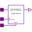

InertialDelaySensitiveVectorDelay of a vector of digital signals |
|
Information
This information is part of the Modelica Standard Library maintained by the Modelica Association.
The delay element Inertial Delay Sensitive is applied to a vector of n signals. The parameters tLH and tHL are valid for each of the n signals.
Parameters (3)
Connectors (2)
| x |
Type: DigitalInput[n] |
|
|---|---|---|
| y |
Type: DigitalOutput[n] |
Components (1)
| inertialDelaySensitive |
|---|
Used in Examples (1)
|
Modelica.Electrical.Digital.Examples Vector delay |
Used in Components (4)
|  |
Modelica.Electrical.Digital.Registers Edge triggered register bank with high active reset |
|
Modelica.Electrical.Digital.Registers Edge triggered register bank with high active set and reset |
|
|
Modelica.Electrical.Digital.Registers Level sensitive register bank with reset active high |
|
|
Modelica.Electrical.Digital.Registers Level sensitive register bank with set and reset, active high |